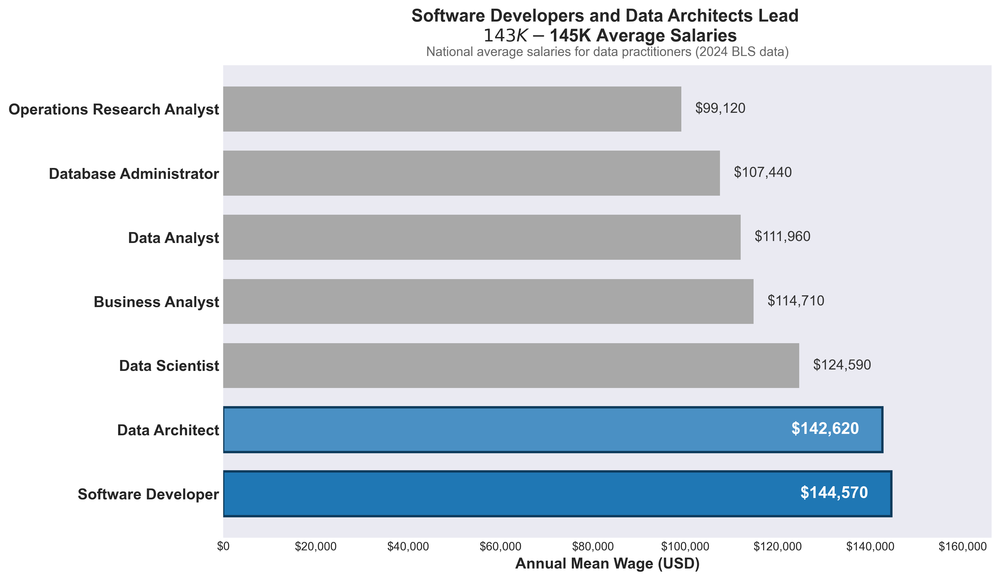
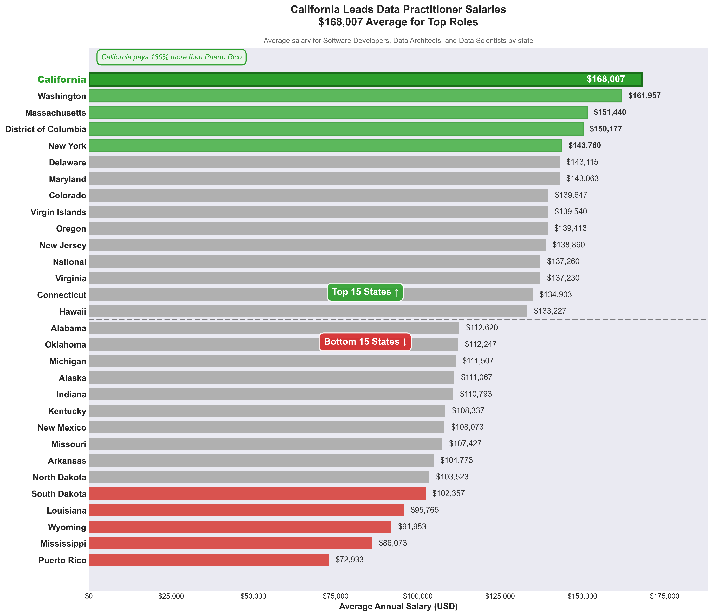
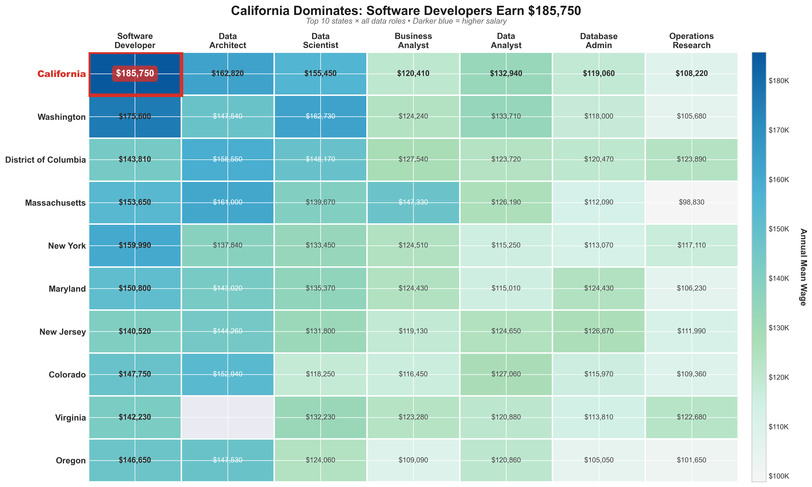

If you work in data as an analyst, scientist, architect, or developer, you've probably wondered at some point how your salary stacks up. Job titles vary wildly, and so do the paychecks. Using 2024 data from the Bureau of Labor Statistics, I set out to answer one simple question: How much do data practitioners actually get paid?
The three charts below look at that question from different angles. The first ranks every major data role by national average salary. The second shows which states pay the most (and the least) for top roles. The third puts both dimensions together so you can see exactly where the highest paying combinations of role and location are.
Two focus points shaped how this story was built:
Audience: People who work in data and want to know where they stand whether they're benchmarking their current salary, weighing a job offer in a new state, or deciding which direction to grow their career.
Visual theme: All three charts share the same dark navy header, the same font, and a consistent color logic the leader is always the most saturated color, context fades to gray, and lagging values shift to red. A reader who learns the color meaning in Chart 1 doesn't have to relearn it in Charts 2 or 3.
Software Developers and Data Architects come out on top nationally. A few numbers worth knowing:
Each bar is the 2024 national average salary for one data role, sorted highest to lowest. Software Developers and Data Architects are at the top ($145K and $143K), shown in bold blue so they stand out immediately. Everything else fades to gray , the hierarchy is visible before you read a single label.
Why this chart type: Horizontal bars work well here because the role names are long and ranking is the whole point, you can scan from top to bottom without jumping around. Salary values are printed directly on each bar so the axis is all the context you need. No legend, no gridlines, no clutter.
Fidelity: Every bar starts at zero and the x-axis is not truncated, so the proportional differences between roles are shown accurately. The national averages come directly from published BLS records with no adjustments.

This chart takes the three highest paying roles from Chart 1 (Software Developer, Data Architect, Data Scientist) and shows how average salaries vary by state. Rather than cramming all 50 states in, it shows just the top 15 and bottom 15 ; the states where the difference actually matters. A dashed line divides the two groups.
California leads in bold green at the top. The lowest paying states sit in red at the bottom. A callout in the chart tells you the exact percentage premium California pays over the lowest state.
Why this chart type: The 25 middle states don't add much to a story about location premium, showing the extremes is more honest and more useful. Every bar shares the same x-axis, so no state is visually inflated relative to another. The color scheme (green = leading, red = lagging, gray = context) carries the same logic as Chart 1 and Chart 3.
Fidelity: Salaries are averaged only across the three roles where BLS wage data is consistently available across states, so no state's bar is inflated or deflated by a missing value. The shared zero anchored x-axis means every bar length reflects the actual salary difference.

Start at the red box that's California for Software Developer at $185,750, the highest salary in the entire dataset. Now look at the rest of the California row: it's consistently the darkest row across every column, which tells you California's lead isn't a fluke of one role it holds everywhere.
Pick any column and read down. You'll see how quickly salaries drop as you move from leading states to the rest. The Software Developer column falls the most steeply location matters a lot for that role. Business Analyst is noticeably flatter, meaning you won't gain as much salary by relocating if that's your title.
About the blank cell: Virginia's Data Architect value is missing because the BLS withheld it. They reported 7,140 people employed in that role in Virginia, but the wage estimate didn't pass their reliability check, so it was suppressed. Every other cell is a published BLS number.
Why this chart type: A heatmap is the natural fit when you have two category axes and one number. Both axes are sorted by average salary so the highest values cluster in the top-left corner, where your eye goes first. The color scale runs from the actual minimum to the actual maximum in the data, so the contrast you see reflects real differences. The blank Virginia cell is left blank rather than filled in, which keeps the chart honest.

Numbers come straight from the BLS national level records. For the state comparison chart, salaries were averaged across the top three roles per state , this smooths out noise from states where one role has very few reported workers. The heatmap uses the top 10 states by overall average salary across all seven roles.
These are mean wages, which get pulled upward by high earners at big tech firms especially in California. If you're comparing to your own salary, median wages would be a fairer benchmark. Also, these numbers aren't adjusted for cost of living: $145K in San Francisco buys a lot less than $110K in, say, Texas.
Charts were built in Python using Matplotlib and Seaborn, exported as PNG files.